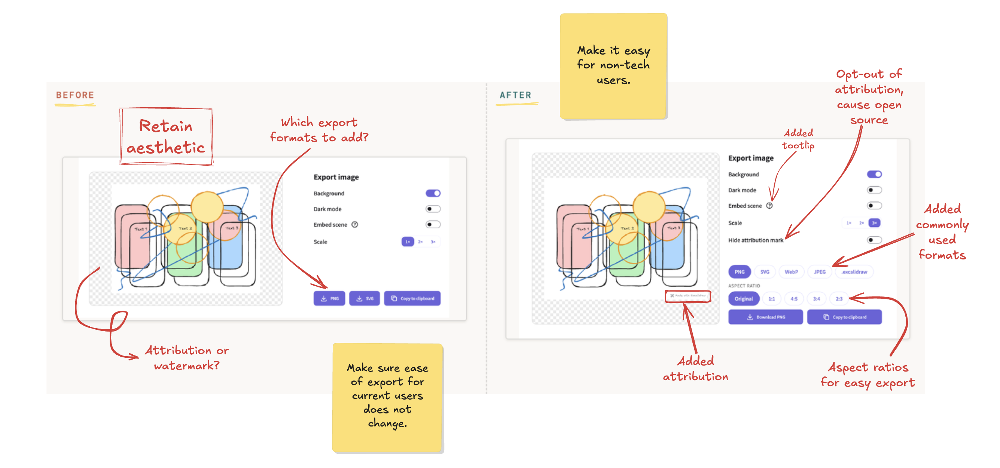
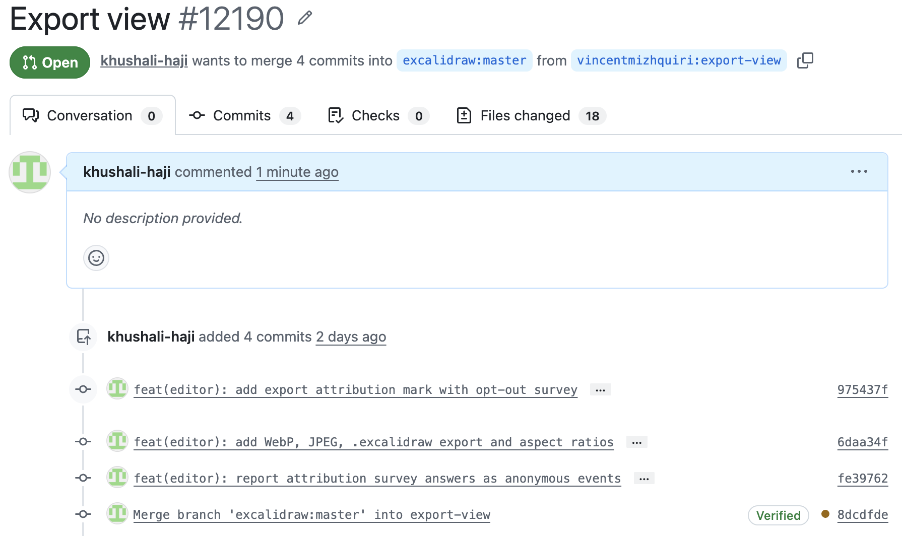

Case Study 04 · Product Strategy, Design & Build
Made with Excalidraw
Increasing marketing visibility for an open source platform
TLDR: Excalidraw is an open source whiteboard tool, and its drawings get shared everywhere, but almost none credit where they came from, and Excalidraw couldn't measure it. I led the UX design of subtle changes to meet the marketing KPI and make it measurable, like a default, free-to-remove credit line and better export options, so the team can track how visible the brand is.

01 · The Problem
A credit that doesn't travel with its drawings
Picture a developer sketching how their app works in Excalidraw, then pasting the picture into a document for their team. Or a teacher dropping one onto a class slide. Or a student posting one on LinkedIn. The drawing travels far, but the name of the tool that made it stays behind.
This was the problem: every shared drawing could quietly introduce someone new to Excalidraw and expand its reach, but currently almost none say where they came from. Also, Excalidraw couldn't tell how often this happened. Its analytics had no way to see whether a drawing carried the Excalidraw name, so the team had no starting number to improve on.
Excalidraw's Head of Marketing, represented by a Pursuit staff member for simulated client engagement, wanted that to change. The goal was to move one number, the brand visibility rate, or the share of shared drawings that carry visible Excalidraw credit.
Two things made it harder:
- No accounts, no tracking. Excalidraw works entirely in your browser. There are no logins, and no server ever sees what you draw. Any idea that needed to know who someone was, or follow their drawing around, was off the table. That is why the solution relies on small, transparent, optional changes.
- Nothing to measure against. Because the analytics couldn't see credit, there was no baseline. Rebuilding the export dashboard around this goal became part of the work.
The question my team set out to answer was: how do we make Excalidraw more visible on the drawings people share, without logins, a loud watermark or tracking anyone, and how do we measure it?
02 · Research
Most drawings never use the Export button
We started by asking where Excalidraw drawings really go. Most don't leave through the Export menu at all. People copy and paste them straight into a document, a code project, a blog post or a slide. That mattered since any credit that lived only in the export screen, or sat behind an opt-in switch, would miss most real use. A quick competitive audit followed.
| On the free plan | Tools |
|---|---|
| Credit on exports | Napkin.ai, Whimsical, Miro (watermarked, low-resolution PDFs) |
| Credit only sometimes | Canva (only when premium elements are used) |
| Credit on free videos | Loom (a "Made with Loom" badge) |
| No credit found | FigJam, draw.io |
Loom's badge works because it shows up automatically. But Loom is a private, commercial product, and removing the badge is a paid feature. Excalidraw is open source and free, so charging to remove its credit would go down even worse here. Our rule for this project: the credit is on by default, but turning it off always stays free.
User Stories
Developer
Anaya wants to drop a clean diagram into her team's document in seconds, with no screenshot tool or extra editing. She has used Excalidraw for years and likes its no-pressure, local-first feel. If that changed, she would switch quickly.
Teacher
Mr. Smith has no tech background. He wants to export a drawing for a class slide in one step, and switch off anything he doesn't understand without getting stuck. He hears about FigJam and Miro, not Excalidraw, but would try it if it felt easy and offered slide-friendly formats and aspect ratios.
Student
Camila is preparing for system design interviews. She wants to share diagrams with her study group and on LinkedIn so others see her thinking. She is happy to credit Excalidraw, and her friends prefer open source. But she can't set an aspect ratio, and her homework needs to look consistent.
Strategy: Grow the base you already have
- Focus on developers who already share and are an existing, engaged user base. They already make shareable drawings every day, so the same effort goes further.
- Not chasing classrooms. Formal use in education was ruled out early. It needs procurement approval, stricter privacy handling and classroom features Excalidraw does not have.
- Teachers and students who find their way here are still included. Whether they are tech students or non-technical tutors, they get easier exports, with more formats and aspect ratios, and more reasons to keep using the tool.
03 · Design
Scoping the Work
Every idea had to pass two tests: would it move the brand visibility rate, and would it work with no login and no tracking? Instead of one loud watermark, we chose small, quiet design changes that add up. A credit line in the export margin by default, a QR code on shared collaboration links, and a short survey that appears only if someone turns the credit off. Here is how we ranked them.
| Priority | Features |
|---|---|
| P0Must have for the goal |
|
| P1Helps the goal |
|
| P2Next round |
|
Figma Prototype
A 55 second silent screen recording of the Figma prototype. The export dialog shows a preview with the attribution mark in the corner, format and aspect ratio options, and a toggle to hide the mark. Turning the toggle on opens a four-question survey before the mark is removed.
Open the Figma prototype → (opens in a new tab)
Design Decisions
- Removal is free, but needs a short survey. WhyI ruled out paid removal, which is Loom's model, because it would feel wrong for a free, open source tool. A four-question survey turns every opt-out into feedback on why people turn the credit off. CostA few seconds of friction for anyone who wants the credit gone.
- The credit sits in the margin, not over the drawing. WhyI kept it out of the drawing area. An overlay could cover what the user drew, and the brief rules that out. CostA thin strip of whitespace on exports.
- Opt-out lasts 30 days, then lapses. WhyI chose 30 days. A permanent opt-out loses that visibility for good, and a reset every session would nag. Thirty days wins some visibility back without that. CostSomeone who wants it off has to turn it off again each month.
- Ask once per opt-out, not per export. WhyI ask once per opt-out. Someone exporting 20 times is one data point, not twenty. CostFewer survey answers, but cleaner ones.
- One survey question at a time. WhyI show one question per screen. Hick's Law says the more options a person sees at once, the longer they take to decide, so this keeps each choice small and the survey near the 30-second target. CostFour short steps instead of one form.
- The QR code stays a quiet, secondary signal. WhyI put the logo on the existing collaboration QR code instead of adding a new branding surface, so it reaches a real touchpoint without a new element to dislike. CostA small signal that is easy to miss.

- Aspect ratio grows the canvas, never crops. WhyI grow the canvas to fit. Cropping could cut off the user's own content. CostExports at a fixed ratio can have extra empty space around the drawing.
- It is an attribution mark, not a watermark. Why"Watermark" implies covering the drawing, so I named it an attribution mark, and the toggle reads "Hide attribution mark." CostNone. It is a wording choice.
04 · Building It
Coding with AI
I used Claude Code for the implementation and kept the product calls, the design review and the QA with the team. The scope and trade-offs were fixed before the first prompt. When Claude Code suggested louder branding, mandatory on every export, I directed against it: the credit stays on by default, but turning it off is always free. After building, we ran QA and manual testing to catch bugs that the automated checks had not caught:
- Double-scaled mark. The mark rendered mid-image and too small, not in the bottom-right corner. Excalidraw's renderer had already scaled the canvas context, and the new drawing code applied the scale again. The fix was to draw inside the context that was already scaled.
- Hardcoded margin. The mark was cropped on small or tightly zoomed exports, because the reserved margin was a guessed fixed size. The margin is now derived from the mark's measured size, clamped so it can't leave the canvas.
The test environment can't rasterize a canvas, so position bugs like these get past unit tests. I verified them against the SVG output, which exposes coordinates directly.
05 · Teamwork
Shipping in a shared repo
Four contributors worked in one repository, the project's shared codebase, each on a separate branch, a parallel copy of the code that merges back once reviewed. To avoid collisions, we kept each unit of work small and checked what teammates were building before starting the next one.
My work landed as three feature commits, saved checkpoints in the code history, ordered by dependency: the attribution mark and opt-out first, then export formats, then survey reporting. Each commit passed automated checks (typecheck, lint, tests), so any one can be reviewed alone or reverted without breaking the others.
| Contributor | Work |
|---|---|
| Khushali H. | Export attribution mark, opt-out survey, export formats, aspect ratios |
| Bo M. | QR code logo, branded export filenames, file-type icon branding |
| Richard T. | Export analytics dashboard |
| Vincent M. | Live-sync embed with attribution, deployment configuration |
After merging in our team repo, a pull request was opened in the main Excalidraw repo (#12190 (opens in a new tab)).

(opens full size in a new tab)06 · Results
The credit now travels with the drawing
The question was how to make Excalidraw more visible on shared drawings, without logins, a loud watermark or tracking, and how to measure it. Partly answered:
- More visible. Every PNG, JPEG, WebP and SVG export, and every copy-paste, now carries the credit by default.
- Without the cost. It sits in the margin, never over the drawing, and turning it off is always free. Nothing identifies anyone.
- Measurable. The export dashboard counts exports by format, and survey answers are reported as anonymous events.
What is not proven yet
Since there was no attribution baseline before this work, we can't say the KPI moved, only that it can now be measured. The analytics dashboard the team built still runs on mock data and is not connected yet. Cross-browser testing is still needed, since the mark uses canvas features that can vary between browsers.
What we'd do differently
- Ship the baseline before the feature. The brief itself said instrumentation was a prerequisite, but the feature was built first, so there was nothing to measure it against.
- Agree the measurement plan on day one. Design the events and the dashboard together with the dashboard owner, so they connect from the start.
- Test across browsers earlier. Unit tests can't catch canvas rendering bugs at the pixel level.